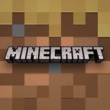
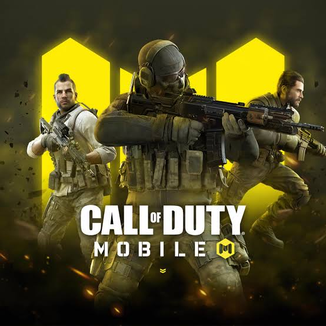
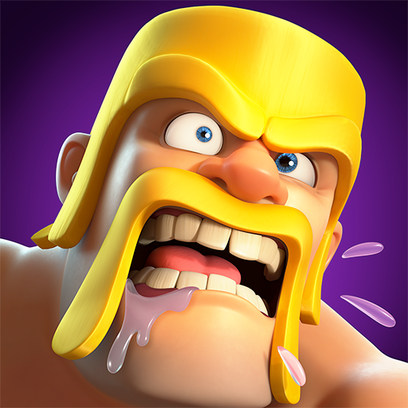

GTA 6
Pro Tip: मैप के छिपे हुए रास्तों को खोजें और 'Side Missions' को पूरा करके ज्यादा पैसे कमाएं।

Free Fire
Pro Settings: General: 95, Red Dot: 90. सही सेंसिटिविटी से हेडशॉट आसान हो जाता है।

PUBG / BGMI
Pro Tip: रिकॉइल कंट्रोल के लिए Gyroscope चालू रखें और 'Vertical Foregrip' का उपयोग करें।

Resident Evil
Pro Tip: गोलियां बचाकर रखें! हर दुश्मन को मारने की जरूरत नहीं, कभी-कभी भागना बेहतर है।

Crimson Desert
Pro Tip: अपनी कॉम्बैट स्किल्स मास्टर करें। भारी हथियारों के साथ 'Dodge' तकनीक का अभ्यास करें।

Forza Horizon 6
Pro Tip: हर ट्रैक के हिसाब से कार की 'Tuning' बदलें। टायर प्रेशर और गियर रेशियो पर ध्यान दें।

Zenless Zone Zero
Pro Tip: सही टाइमिंग के साथ 'Dodge' करें और 'Combo Attacks' की चेन बनाकर डैमेज बढ़ाएं।

Minecraft
Pro Tip: पहली रात बचने के लिए सबसे पहले 'Crafting Table' बनाएं और सुरक्षित ठिकाना खोजें।

COD Mobile
Pro Tip: 'Quickdraw' अटैचमेंट का उपयोग करें, इससे आप तेजी से 'Aim' कर पाएंगे और दुश्मनों को मार पाएंगे।

Clash of Clans
Pro Tip: Town Hall अपग्रेड करने से पहले अपने सभी डिफेंस को पूरी तरह से अपग्रेड करना न भूलें।

Roblox
Pro Tip: 'Obby' मोड में जंप टाइमिंग और मूवमेंट की प्रैक्टिस करना आपको प्रो बना देगा।